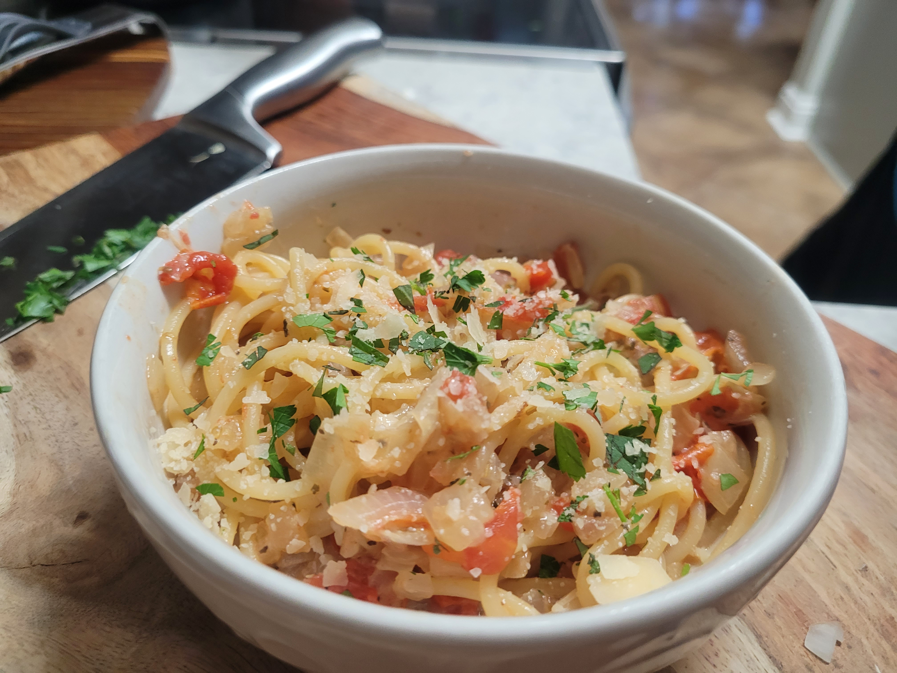

This recipe consists of an ultra simple pasta and parmesan sauce base that you can modify with whatever ingredients you like to keep at home. In my house, spaghetti and shaved parmesan are two ingredients that I rarely live without. Fortunately, it's all you need to make a tasty base for a pasta dish that can come together quickly and use up some of your leftover ingredients. The flexibility of this recipe makes it an essential technique to keep in your back pocket.
The timing of cooking pasta is very important to the quality of the dish, so you may want to wait to boil your pasta if you have lots of ingredients to prep. Bring a pot of water to a boil. For spaghetti, make use enough water to submerge the dried noodles about one third to one half of the way. Add enough salt to make the boil water a little saltier than you want the final dish to taste. It will be a lot, but most of the salt will remain in the boil water. When at a boil, drop in your pasta and cover with a lid. Use the cook time listed on your pasta box for reference or just give a nibble every now and again until it's ready. You may need to help your spaghetti into the pot early in the process depending on how small your pot is. When the pasta is a just a touch firmer than you'd like it be, take it off the heat and strain the liquid through the lid or a colander being sure to reserve some of the water for later. If you're not ready for Step 3 when you finish, keep the pasta covered in the pot with a tiny layer of water at the bottom. You may want to shake them around in a spash of olive oil to prevent sticking.
This step can be simple or complicated depending, but I'll run through some options. If cheesy noodles is all you wanted, congrats, you're done, but you may want to use an egg to build a more substantial sauce (Read ahead for details). I usually like to sweat a half of an onion until soft along with some diced fresh grape tomatoes since that's basically the only good tomato you can get fresh in the US, and I don't keep good canned tomatoes for sauces. Of course you can throw in some garlic if you like, but be careful not to burn it by throwing it in at the start. If I have some leftover proteins like chicken breast or bacon, I'll happily toss that in. Use whatever herbs and spices you like. I like to use oregano and sweet Italian herbs like basil and marjoram, but go crazy if you're feeling bold. To bring everything together into a saucy dish, add your pasta and use your reserved pasta water to loosen and add starch and then toss or stir your parmesan into it. You will want to stir pretty intensely to prevent your parmesan from clumping. If you don't have many fancy ingredients you can instead build a sauce with just egg, pasta water, and cheese. You'll need to have a pre-beaten, room temperature egg prepared becuase this method can be intense. When your pasta is al dente, add it to a pan with some pasta water and stir it aggressively while you slowly add your shaved parmesan and egg. You must use the residual heat of the pasta to cook the egg. Too much heat will curdle your egg, and too little stirring will clump up your egg AND cheese. A mappazzone! Once your pasta is finished cooking in the sauce, plate it and feel free to add extra cheese and a finishing olive oil on top.